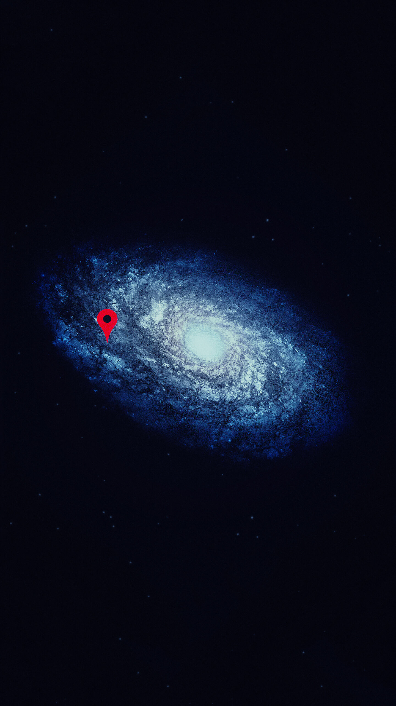

Mercury
It is the closest planet to the Sun and the smallest in the solar system. It has a rocky and desert surface, without atmosphere and with extreme temperatures ranging from -173°C to 427°C.

Venus
Known as the twin planet of Earth due to its similar size and composition. It has a dense and toxic atmosphere composed mainly of carbon dioxide, with temperatures that can reach 471°C.

Earth
he only one known to harbor life. It has an atmosphere rich in oxygen and nitrogen, and an average temperature of 15°C.

Mars
Known as the red planet due to its coloration. It has a thin atmosphere composed mainly of carbon dioxide, with temperatures ranging from -143°C to 35°C.

Jupiter
It is the largest of all. It is a gas giant with an atmosphere composed mainly of hydrogen and helium, and has a series of moons and rings.

Saturn
Known for its spectacular rings. It is a gas giant with an atmosphere composed mainly of hydrogen and helium, and has a series of moons.

Uranus
Known for its extreme axial tilt. It is an ice giant with an atmosphere composed mainly of hydrogen, helium and methane, and has a series of moons and rings.

Neptune
Known for its bluish coloration. It is an ice giant with an atmosphere composed mainly of hydrogen, helium and methane, and has a series of moons and rings.

Things may come to those who wait, but only the things left by
those who hustle.
General Info
What is the Solar System?
t is a planetary system formed by a star (the Sun) and the
celestial bodies that orbit around it, such as planets, moons,
asteroids and comets.
How was the Solar System formed?
It is believed that it originated from a molecular gas cloud
that collapsed by gravity or by the explosion of a nearby
supernova, giving rise to a protostar and a disk of material
that became the planets and other objects.
What parts make up the Solar System?
The Solar System consists of the Sun, eight planets (four rocky
and four gas giants), five dwarf planets, two asteroid belts
(the asteroid belt and the Kuiper belt), a comet cloud (the Oort
cloud) and the interplanetary space.
Where are we?

The Solar System is located in the Orion or Local arm, one of the
spiral arms of the Milky Way galaxy, about 28,000 light years from
the galactic center. The closest Solar System to ours is
Alfa Centauri, 4.4 light years away.